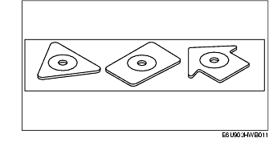

Troubleshooting ➭ BODY & ACCESSORIES ➭ AUDIO CD [REFERENCE]
AUDIO CD [REFERENCE]
id0903a4807100
• The CD player/changer has been designed to play CDs bearing the identification logo, COMPACT DISC DIGITAL AUDIO, as shown. No other discs can be played on the CD player/changer other than MP3 applicable ones.
• The CD player/changer may not play the following types of CDs:
- Defective CDs (e.g., cracked, badly bent, rough edges, scratch, dirty CD condensation) - 8 cm (3 in) CD accessories (e.g., 8 cm (3 in) disc adapter, sticker, label) - Nonstandard CDs (e.g., Diameter/thickness is out of specification)
Specification: 119.7-120.3 mm (4.668-4.692 in) of diameter, 12+0.3 or -0.1 mm (0.047+0.012 or 0.004 in) of thickness
• Do not use non-conventional discs. The CD player/changer could be damaged.

• Although the same physical size as the compact disc, SACDs use a different kind of digital audio signal called Direct Stream Digital.
• The CD player/changer may not play the CD-R/RW properly due to the disc condition (excluding MP3).
MP3-Formatted File
- CD-R: The CD-R is a non-rewritable version. Once a section of a CD-R is written, it cannot be erased or rewritten. - CD-RW: The CD-RW is a re-writable version of CD-ROM and the data can be written an unlimited number of times. - Since the reflected laser beam amount of a CD-R/RW is less than the reflected laser beam amount of the conventional CD media, the CD player/changer may not play the CD-R/RW or the sound may jump. - Since the recording quality of the CD-R/RWs vary widely, some CD-R/RWs may not play.
• There are two methods for recording.
• The price of the audio recorder and original audio-CD include the copyright fee.
• The data-CD is cheaper than the audio-CD. But, there are lower quality CDs.
• Classification by audio data extraction/compression
• The CD-R/RW player can play the extracted audio data.
• It is possible to record a large quantity of music to a disc. The sound quality varies depending on the audio data compression format. The compressed audio data can be played on the applicable player only.
• MP3: MPEG Audio Layer 3 - Mazda genuine MP3 applicable CD player is available. • WMA: Windows Media Audio • ATRAG: Adaptive TRansform Acoustic Coding
• The following conditions should be met in order to record the MP3-formatted data to the MP3 applicable CD player:
|
Maximum 255 as the total number of files and folders Maximum of 155 for folders |
|